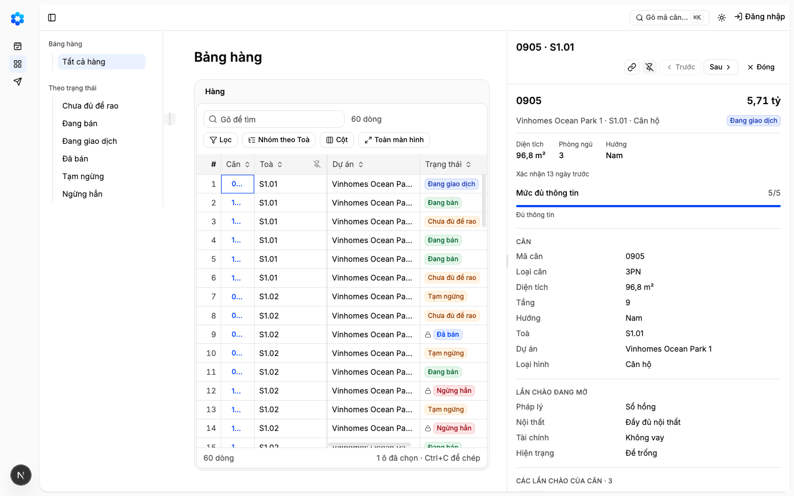
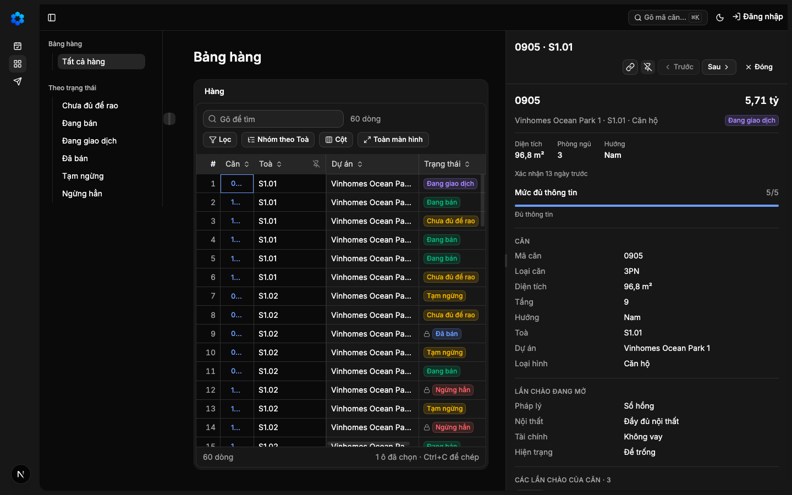
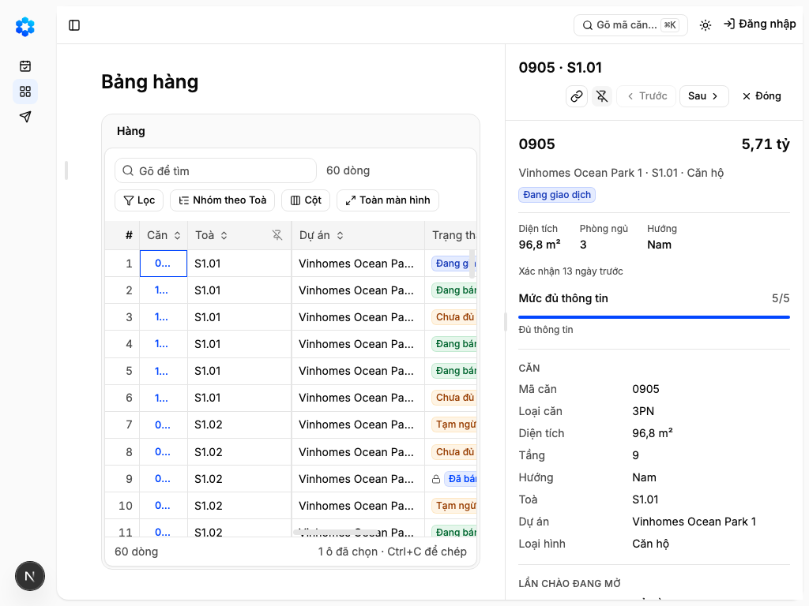
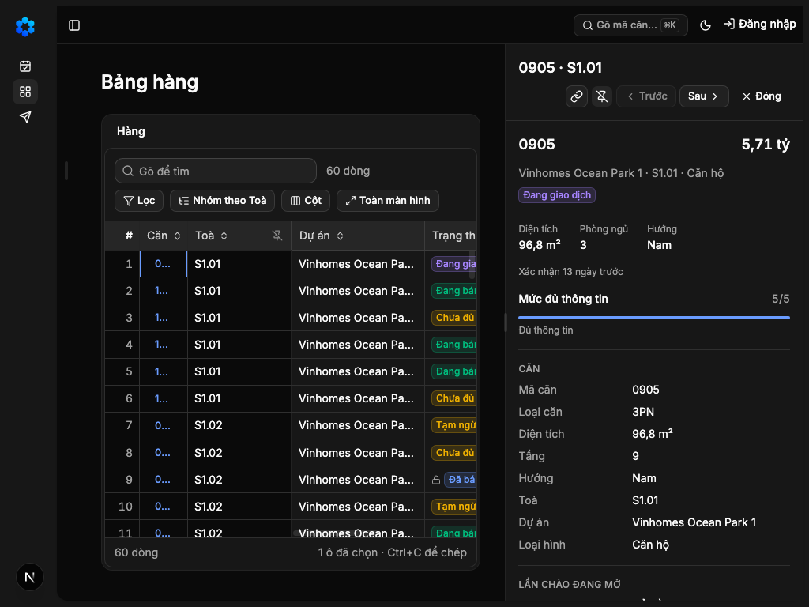
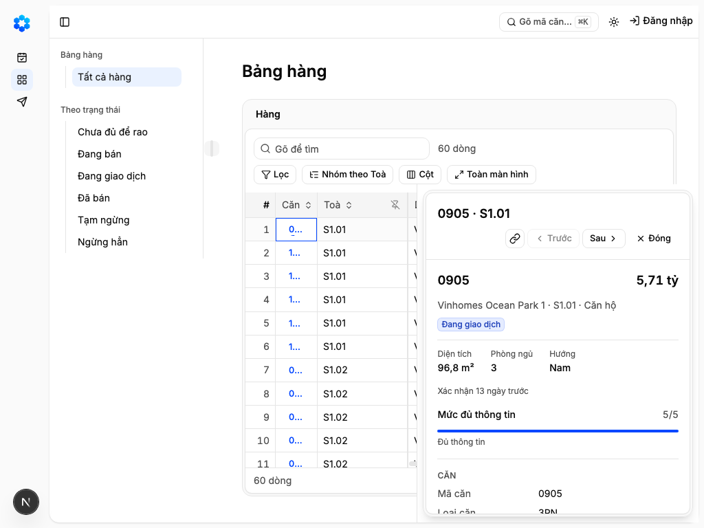
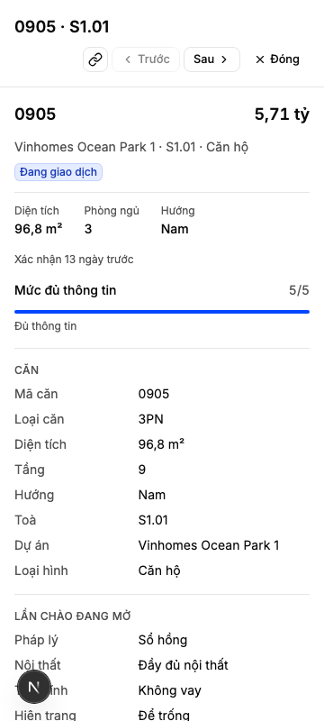

"Đầu chủ ghim ngăn chi tiết thành một cột cạnh bảng khi làm lâu trên một căn, bỏ ghim thì ngăn nổi lại"
Vì sao làm
Chủ kho 2026-11-12 trong phiên dãy D: «Lấy B có ghim» — ngăn nổi là cách chung cả ứng dụng để xem chi tiết một dòng; nút ghim biến ngăn thành cột khi làm lâu. Hàng 3 dựng ngăn nổi, phần ghim là hàng này
Đã hứa
- AC-1 — Given Bảng hàng hay Đã gửi ở khổ 1440, hoặc 1024 với cột thứ hai App Shell gập, với hồ sơ một dòng đang mở, When nhìn đầu hồ sơ, Then dòng hai có
- AC-2 — Given hồ sơ đang nổi trên Bảng hàng hay Đã gửi ở 1440, hoặc 1024 với cột thứ hai App Shell gập, When bấm Ghim, Then hồ sơ thành cột sát mép phải vùng làm việc (không còn
- AC-3 — Given đang ghim, When bấm «Sau», bấm mã căn của một dòng khác, bấm «Đóng» rồi mở lại một căn, tải lại trang, hoặc
- AC-4 — Given hồ sơ nổi ở 1440 và 1024, hay ghim ở 1440 và ở 1024 với cột thứ hai App Shell gập, When đo, Then thanh trên của App Shell và thanh công cụ của vùng không bị
- AC-5 — Given đang ghim ở 1440, When kéo vạch chia sang trái hay phải, hoặc đặt tiêu điểm vào vạch rồi bấm mũi tên trái,
- AC-6 — Given trạng thái ghim đã lưu, When đọc kho lưu của trình duyệt, Then chỉ có một cookie `ho_so_ghim` mang trạng
- AC-7 — Given hồ sơ ghim ở 1440 sáng và tối, When quét trợ năng, Then không lỗi nào; nút Ghim có tên và `aria-pressed`,
- AC-8 — Given sổ màn `design/screens.yaml`, When chạy công cụ sinh bảng vai × màn × nút, Then nút «Ghim» có trong nút
- AC-9 — Given ảnh hồ sơ ghim ở 1440 và 1024 (cột thứ hai App Shell gập) sáng và tối, và ảnh 360 sáng, cạnh ảnh khối ReUI `app-shell-11`,
Thiết kế
docs/superpowers/specs/2026-11-14-ngan-chi-tiet-ghim-thanh-cot-design.md
Quyết định
- 2026-11-13 · Người (Manh Phan) · approach · gate1 — Hỏi-1 và Hỏi-2 theo khuyến nghị: điện thoại không có nút Ghim, hồ sơ toàn màn; màn hẹp khi ghim giữ nguyên cột thứ hai của App Shell.người chọn ở Cổng Phạm vi: duyệt
- 2026-11-13 · Người · seal · gate1 —
- 2026-11-14 · Máy · approach · S1 — Nạp 3 luật sản phẩm từ PRODUCT-INVARIANTS.mdKho đã khai tệp luật sản phẩm — bước thiết kế đọc nó trước khi chọn.
- 2026-11-14 · Máy · approach · S1 — Đã tra tri thức: Đầu chủ ghim ngăn chi tiết thành một cột cạnh bảng khi làm lâu trên một căn, bỏ ghim thì ngăn nổi lạiKho đã khai tri_thuc — bước thiết kế tra trang trước khi chọn.
- 2026-11-14 · Máy · approach · S1 — Ghim biến ngăn nổi thành một cột đứng cạnh bảng, vạch chia giữa bảng và cột kéo được để đổi rộng.Chủ kho đã nói đúng dáng này ở Cổng Phạm vi hàng 3 khi để phần ghim cho hàng sau.
- 2026-11-14 · Máy · approach · S1 — Dựng theo khối ReUI app-shell-11 và thành phần Resizable (gói react-resizable-panels); rút khối ai-chat-2 (cột ghim rộng cố định) và các khối Sheet (chỉ nổi).Chỉ khung chia của Resizable kéo đổi rộng được; ReUI tự ghi khối Sheet không kéo được và ai-chat-2 rộng cố định.
- 2026-11-14 · Máy · approach · S1 — Trạng thái ghim và độ rộng lưu trong một cookie lựa chọn giao diện ho_so_ghim, không mang dữ liệu sàn, cùng cách cột hai App Shell nhớ đóng mở.Kho đã có tiền lệ cookie lựa chọn giao diện không mang dữ liệu sàn cho cột hai App Shell; luật ngoại tuyến chỉ cấm giữ dữ liệu sàn trên máy.
- 2026-11-14 · Máy · approach · S1 — Nút Ghim chỉ biểu tượng, thuộc khung RecordPanel, ở dòng hai đầu hồ sơ sau các nút của bản ghi và trước Trước, Sau, Đóng; mọi màn dùng khung chung tự có nút.Sổ hành vi đặt thao tác trên cả hồ sơ ở đầu hồ sơ bên phải; giám sát chốt mỗi nút một nhà và chỗ cho nút Ghim ở đầu hồ sơ hai dòng của 3e.
- 2026-11-14 · Máy · approach · S1 — Độ rộng cột ghim mặc định hai phần năm vùng làm việc như ngăn nổi, hẹp nhất 320 px, rộng nhất ba phần năm.Sổ hành vi đặt ngăn rộng khoảng hai phần năm; 320 px là bề rộng tối thiểu ngăn nổi đang dùng; trần ba phần năm giữ bảng không hẹp hơn cột.
- 2026-11-14 · Máy · approach · S1 — Hỏi-1: Trên điện thoại không có nút ghim; hồ sơ vẫn mở toàn màn như hôm nay.Màn 360 không đủ chỗ cho bảng và cột cùng lúc; nghĩa của «ghim» trên điện thoại là lựa chọn sản phẩm của chủ kho.
- 2026-11-14 · Máy · approach · S1 — Hẹp nhất 320 px theo bề rộng tối thiểu của ngăn nổi hôm nay; trần ba phần năm; nút Ghim chỉ hiện khi vùng làm việc từ 800 px để hai giới hạn không chọi nhau.Phản biện chỉ ra ở 768 với cột hai mở, ba phần năm nhỏ hơn 320; ngăn nổi đang đặt min-w-80 (320 px).
- 2026-11-14 · Máy · approach · S1 — Hỏi-2: Ở màn hẹp (1024), ghim khi cột thứ hai của App Shell đang mở thì giữ nguyên cột thứ hai; bảng còn trọn hai cột dữ liệu, người dùng tự gập cột thứ hai nếu cần.Giám sát chỉ ra đây là lựa chọn của chủ kho, không phải rủi ro để chủ kho tự suy; chủ kho đã chốt App Shell giữ hai cột ngày 11/11.
- 2026-11-14 · Máy · fix · S3 — Sửa sau Cổng Phạm vi: ngăn nổi của hàng 3 nay đứng dưới thanh công cụ của vùng thay vì ngay dưới thanh trên; bài đo đỉnh ngăn của hàng 3 đổi theo dáng mới, không nới.Ngăn nổi đứng ngay dưới thanh trên che hai nút Cột và Toàn màn hình, trái AC-4 đã duyệt; giám sát phân xử D-1411-1 theo chữ mới hơn của chủ kho.
- 2026-11-14 · Máy · descope · S3 — KHÔNG làm mục kèm «cột Căn không cắt mã căn» trong 3a; ghi Ngoài hợp đồng, giám sát ghi thành nợ cho một việc riêng có Cổng Phạm vi.Ba cách đã thử đều chạm điều đã ký: thêm 2 ký tự vỡ ngưỡng 4 và 2 cột của hàng 3; nút cỡ xs trái luật vùng chạm 24 px ở điện thoại; thêm 1 ký tự vẫn cắt; bài cắt mã ở cột hẹp của hàng 6 xanh nhờ chính lỗi này (D-1411-2).
- 2026-11-14 · Máy · fix · S3 — Cột ghim mặc định rộng bằng ngăn nổi (hai phần năm cửa sổ, 320 tới 512 px) thay vì hai phần năm vùng làm việc; đóng hồ sơ ghim thì trả tiêu điểm cả khi bảng dựng lại dòng.Bề rộng khác ngăn nổi làm chữ dàn lại và cuộn nhảy khi ghim; bảng giãn ra sau khi đóng dựng lại dòng nên chữ mở vừa nhận tiêu điểm bị thay.
- 2026-11-14 · Máy · fix · S4-r1 — Vòng 1 bị trả vì ba chỗ: chứng minh màn Đã gửi thiếu nhóm ứng viên ReUI (đã thêm); bài «hồ sơ chỉ đọc» của 3b coi Ghim là nút lạ (thêm Ghim, Bỏ ghim vào danh sách nút đọc — nút không ghi dữ liệu); vòng trả tiêu điểm giành lại tiêu điểm cả khi người dùng rời đi (nay chỉ trả lại khi dòng nhận tiêu điểm bị thay).Đỏ ở make test, make check (proof-gate) và make e2e (ho-so-du-thong-tin.spec.ts:227, behavior.spec.ts:117); 3b vào nhánh chính sau khi 3a dựng.
- 2026-11-14 · Máy · fix · S4-r2 — Vòng 2 bị trả vì sáu chỗ trong bài đo của chính 3a: thêm ca Esc ở ô Giá chào đang sửa (huỷ sửa, hồ sơ vẫn ghim); bốn ca đối chứng nay đi qua phép đo thật (Esc toàn trang, cột hẹp 200 px đo trên trang, bóng nổi khi ghim, nút Ghim mất tên bị quét trợ năng bắt); vế dương của E1 chuyển sang khổ 900 vì ở 768 vùng làm việc chỉ 688 px dù gập cột hai — sửa sau Cổng Phạm vi lời kỳ vọng E1. Ca 900 bắt được lỗi thật: cột ghim để bảng hẹp dưới 480 px; trần nay là nhỏ hơn của ba phần năm và vùng làm việc trừ 480.Hội đồng vòng 2 chỉ ra AC-7 thiếu ca ô đang sửa và các ca đối chứng tự dựng điều kiện (âm tính một mình, số viết tay).
- 2026-11-14 · Máy · revisit · gate2 — Ngoài-1: ghi Known limitsmáy tự định tuyến theo đề xuất S4 «known-limits» — kho bật feature_loop.ngoai_n_tu_dinh_tuyen
- 2026-11-14 · Máy · revisit · gate2 — Ngoài-2: ghi Known limitsmáy tự định tuyến theo đề xuất S4 «known-limits» — kho bật feature_loop.ngoai_n_tu_dinh_tuyen
- 2026-11-14 · Máy · revisit · gate2 — Ngoài-3: ghi Known limitsmáy tự định tuyến theo đề xuất S4 «known-limits» — kho bật feature_loop.ngoai_n_tu_dinh_tuyen
- 2026-11-14 · Máy · revisit · gate2 — Ngoài-4: ghi Known limitsmáy tự định tuyến theo đề xuất S4 «known-limits» — kho bật feature_loop.ngoai_n_tu_dinh_tuyen
- 2026-11-14 · Máy · revisit · gate2 — Ngoài-5: ghi Known limitsmáy tự định tuyến theo đề xuất S4 «known-limits» — kho bật feature_loop.ngoai_n_tu_dinh_tuyen
- 2026-11-14 · Máy · revisit · gate2 — Ngoài-6: ghi Known limitsmáy tự định tuyến theo đề xuất S4 «known-limits» — kho bật feature_loop.ngoai_n_tu_dinh_tuyen
- 2026-11-14 · Máy · revisit · gate2 — Ngoài-7: ghi Known limitsmáy tự định tuyến theo đề xuất S4 «known-limits» — kho bật feature_loop.ngoai_n_tu_dinh_tuyen
- 2026-11-14 · Máy · revisit · gate2 — Ngoài-8: chấp nhận, không sửamáy tự định tuyến theo đề xuất S4 «wont-fix» — kho bật feature_loop.ngoai_n_tu_dinh_tuyen
- 2026-11-14 · Máy · revisit · gate2 — Ngoài-9: chấp nhận, không sửamáy tự định tuyến theo đề xuất S4 «wont-fix» — kho bật feature_loop.ngoai_n_tu_dinh_tuyen
- 2026-11-14 · Máy · fix · S4-r3 — Sửa sau Cổng Phạm vi (D-1411-5): mức bảng 480 px và ngưỡng hiện nút Ghim tính trên chính vùng dữ liệu, không trên vùng làm việc App Shell; ở 1024 khi cột thứ hai mở thì nút Ghim ẩn và hồ sơ nổi, gập cột thứ hai thì ghim được; không tự gập cột thứ hai. Trần ấy chỉ áp khi ghim, ngăn nổi giữ bề rộng hàng 3. Số đo vùng làm việc và vùng dữ liệu nay đo lại cả khi thanh bên mở, gập. Bài E1, E2 đo vùng dữ liệu thật, thêm ca phá bảng dưới 480 px khi ghim.Ảnh cổng chụp lại trên bản vòng 3 cho thấy ở 1024 bảng chỉ còn 222 px vì vùng làm việc gồm cả cột thứ hai App Shell và lề trang; bài đo cũ đo vùng làm việc nên không bắt được. Chữ «bảng 480 px» của AC-1 và ảnh A của Hỏi-2 kéo ngược nhau: G chọn lối A và trình cả hai lối ở Cổng Bằng chứng.
- 2026-11-14 · Máy · revisit · S4-r5 — Vòng 5 dừng: mọi phép đo máy đạt, E11 đạt (ảnh 1024 cột thứ hai gập đã ghim, bảng 480 px; cột thứ hai mở không có nút Ghim), nhưng hội đồng E12 đề xuất trượt vì cả ba phiếu chấm hai ảnh ghim-1024 cũ — hội đồng chạy lúc 06:18Z, E11 ghi ảnh mới lúc 06:20Z. Không sửa gì thêm; báo giám sát theo điều kiện vòng cuối.Bộ chấm chạy hội đồng song song với ô chụp ảnh mà hội đồng đọc; ảnh đầu vào của E12 được sinh trong chính lượt chấm.
- 2026-11-14 · Máy · fix · S4-r4 — Vòng 4 trả vì ô E11: bước chụp vẫn bảo ghim ở 1024 khi cột thứ hai App Shell mở, nơi lối A cố ý ẩn nút; sửa lời E11 — ở 1024 gập cột thứ hai rồi mới ghim, thêm ảnh 1024 cột thứ hai mở phải không có nút Ghim (sửa sau Cổng Phạm vi theo D-1411-5).Lúc áp D-1411-5 đã sửa E1, E2 mà sót các bước của E11; vật ghi đúng hành vi lối A.
- 2026-11-14 · Máy · fix · S4-r4 — Sửa sau Cổng Phạm vi (D-1411-5, D-1411-6): lời AC-1, AC-2, AC-4, AC-5, AC-9 và mục Coverage nay nói theo vùng dữ liệu — nút Ghim chỉ hiện khi vùng dữ liệu đủ 800 px, ở 1024 khi cột thứ hai App Shell mở và ở 768 thì không; ghim giữ bảng ít nhất 480 px; lời E2, E4, E5 ghi rõ 1024 là khi cột thứ hai gập và trần kéo là nhỏ hơn của 60% vùng làm việc và vùng dữ liệu trừ 480.Giám sát cho vòng 5 với điều kiện rà và sửa mọi chỗ còn nhắc ghim ở 1024 hay 800 px theo vùng làm việc một lần.
Bằng chứng
Các eval
| Eval | Tiêu chí | Loại | Verdict | run_id | verified_at |
|---|---|---|---|---|---|
| E1 | AC-1 | script | PASS | minted-ngan-chi-tiet-ghim-thanh-cot-E1-r5 | 2026-11-14T06:18:04Z |
| E2 | AC-2 | script | PASS | minted-ngan-chi-tiet-ghim-thanh-cot-E2-r5 | 2026-11-14T06:18:04Z |
| E3 | AC-3 | script | PASS | minted-ngan-chi-tiet-ghim-thanh-cot-E3-r4 | 2026-11-14T05:11:47Z |
| E4 | AC-4 | script | PASS | minted-ngan-chi-tiet-ghim-thanh-cot-E4-r5 | 2026-11-14T06:18:04Z |
| E5 | AC-5 | script | PASS | minted-ngan-chi-tiet-ghim-thanh-cot-E5-r5 | 2026-11-14T06:18:04Z |
| E6 | AC-6 | test | PASS | minted-ngan-chi-tiet-ghim-thanh-cot-E6-r4 | 2026-11-14T05:11:47Z |
| E7 | AC-6 | script | PASS | minted-ngan-chi-tiet-ghim-thanh-cot-E7-r4 | 2026-11-14T05:11:47Z |
| E8 | AC-7 | script | PASS | minted-ngan-chi-tiet-ghim-thanh-cot-E8-r4 | 2026-11-14T05:11:47Z |
| E9 | AC-8 | test | PASS | minted-ngan-chi-tiet-ghim-thanh-cot-E9-r4 | 2026-11-14T05:11:47Z |
| E10 | AC-8 | script | PASS | minted-ngan-chi-tiet-ghim-thanh-cot-E10-r5 | 2026-11-14T06:18:04Z |
| E11 | AC-9 | ui-check | PASS | minted-ngan-chi-tiet-ghim-thanh-cot-E11-r5 | 2026-11-14T06:18:04Z |
| E12 | AC-9 | judgment | PASS | — | — |
Chi tiết từng eval
PASS E1 · script
AC-1: Given Bảng hàng hay Đã gửi ở khổ 1440, hoặc 1024 với cột thứ hai App Shell gập, với hồ sơ một dòng đang mở, When nhìn đầu hồ sơ, Then dòng hai có
carry-forward tu round 5 — delta khong cham paths cua eval
PASS E2 · script
AC-2: Given hồ sơ đang nổi trên Bảng hàng hay Đã gửi ở 1440, hoặc 1024 với cột thứ hai App Shell gập, When bấm Ghim, Then hồ sơ thành cột sát mép phải vùng làm việc (không còn
carry-forward tu round 5 — delta khong cham paths cua eval
PASS E3 · script
AC-3: Given đang ghim, When bấm «Sau», bấm mã căn của một dòng khác, bấm «Đóng» rồi mở lại một căn, tải lại trang, hoặc
carry-forward tu round 4 — delta khong cham paths cua eval
PASS E4 · script
AC-4: Given hồ sơ nổi ở 1440 và 1024, hay ghim ở 1440 và ở 1024 với cột thứ hai App Shell gập, When đo, Then thanh trên của App Shell và thanh công cụ của vùng không bị
carry-forward tu round 5 — delta khong cham paths cua eval
PASS E5 · script
AC-5: Given đang ghim ở 1440, When kéo vạch chia sang trái hay phải, hoặc đặt tiêu điểm vào vạch rồi bấm mũi tên trái,
carry-forward tu round 5 — delta khong cham paths cua eval
PASS E6 · test
AC-6: Given trạng thái ghim đã lưu, When đọc kho lưu của trình duyệt, Then chỉ có một cookie `ho_so_ghim` mang trạng
carry-forward tu round 4 — delta khong cham paths cua eval
PASS E7 · script
AC-6: Given trạng thái ghim đã lưu, When đọc kho lưu của trình duyệt, Then chỉ có một cookie `ho_so_ghim` mang trạng
carry-forward tu round 4 — delta khong cham paths cua eval
PASS E8 · script
AC-7: Given hồ sơ ghim ở 1440 sáng và tối, When quét trợ năng, Then không lỗi nào; nút Ghim có tên và `aria-pressed`,
carry-forward tu round 4 — delta khong cham paths cua eval
PASS E9 · test
AC-8: Given sổ màn `design/screens.yaml`, When chạy công cụ sinh bảng vai × màn × nút, Then nút «Ghim» có trong nút
carry-forward tu round 4 — delta khong cham paths cua eval
PASS E10 · script
AC-8: Given sổ màn `design/screens.yaml`, When chạy công cụ sinh bảng vai × màn × nút, Then nút «Ghim» có trong nút
carry-forward tu round 5 — delta khong cham paths cua eval
PASS E11 · ui-check
AC-9: Given ảnh hồ sơ ghim ở 1440 và 1024 (cột thứ hai App Shell gập) sáng và tối, và ảnh 360 sáng, cạnh ảnh khối ReUI `app-shell-11`,







PASS E12 · judgment
AC-9: Given ảnh hồ sơ ghim ở 1440 và 1024 (cột thứ hai App Shell gập) sáng và tối, và ảnh 360 sáng, cạnh ảnh khối ReUI `app-shell-11`,
Phán đoán: Ba lens cung de xuat PASS tren cac anh ghim 1440 va 1024 sang/toi va anh 360 toan man.
Eval không phân biệt (Analyst)
Vòng verify
- Round 4: E11 only re-run — the pinned column at 1024 followed D-1411-5 (App Shell second column folded); evidence recorded for E11 and the machine evals.
- Round 5: machine evals and E11 re-run; E12 panel proposes PASS on the pinned 1440 and 1024 frames and the 360 full-screen frame. Remaining evals carried forward from rounds 4 and 5.
Tài nguyên
| Khối | Tác tử | Token đầu ra |
|---|---|---|
| S4 round 1 | 17 | 61.835 |
| S4 round 2 | 23 | 63.824 |
| S4 round 3 | 17 | 61.416 |
| S4 round 4 | 17 | 60.880 |
| S4 round 5 | 15 | 47.380 |
| S4 round 5 re-judge E12 | 9 | 21.250 |
6 lượt chấm · tổng 316.585 token
Giới hạn và ngoài hợp đồng
- Lớp trò chuyện với AI trong ngăn (thẻ thứ hai) — hàng sau, chưa có ô.
- Ghim trên điện thoại hay biến hồ sơ thành trang riêng (Hỏi-1; trái lời chủ kho ở Cổng Phạm vi 3f).
- Lưu trạng thái ghim lên máy chủ để theo người qua thiết bị khác.
- Ghim nhiều hồ sơ cùng lúc, ghim sang trái, kéo đổi rộng ngăn khi đang nổi.
- Sửa đầu hồ sơ hai dòng, thanh đáy hay nút trong hồ sơ — của hàng 3e.
Giao
chưa ghi quan sát production
Giá trị
- Câu hỏi phép đo trả lời: [đề xuất] đã đạt «Bấm ghim thì ngăn thành cột cạnh bảng, bảng co lại và không cột nào bị tự giấu; bỏ ghim thì ngăn nổi lại; trạng thái ghim giữ khi đi sang căn khác; ngăn nổi hay ghim đều không che thanh trên và thanh công cụ, không khoá bảng; mọi màn dùng khung chi tiết chung đều có nút ghim» chưa? — chưa đo
- Kết quả nào là SỐNG: [đề xuất] Bấm ghim thì ngăn thành cột cạnh bảng, bảng co lại và không cột nào bị tự giấu; bỏ ghim thì ngăn nổi lại; trạng thái ghim giữ khi đi sang căn khác; ngăn nổi hay ghim đều không che thanh trên và thanh công cụ, không khoá bảng; mọi màn dùng khung chi tiết chung đều có nút ghim — chưa đo
- Kết quả nào là CHẾT: [đề xuất] chưa đạt «Bấm ghim thì ngăn thành cột cạnh bảng, bảng co lại và không cột nào bị tự giấu; bỏ ghim thì ngăn nổi lại; trạng thái ghim giữ khi đi sang căn khác; ngăn nổi hay ghim đều không che thanh trên và thanh công cụ, không khoá bảng; mọi màn dùng khung chi tiết chung đều có nút ghim» khi hết timebox — chưa đo
- Timebox: … — chưa đo